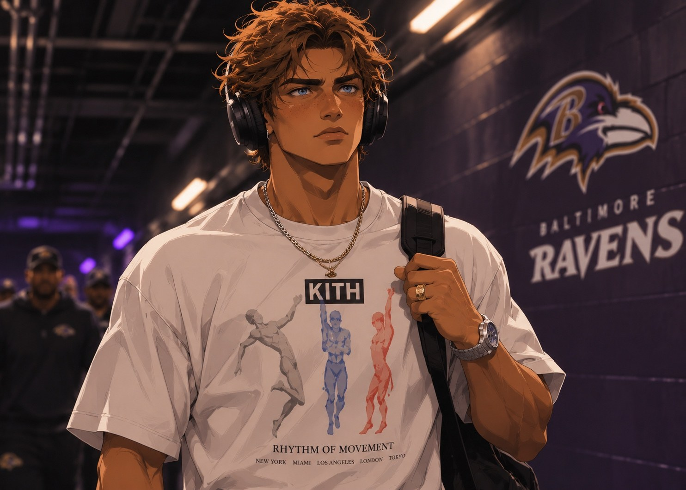
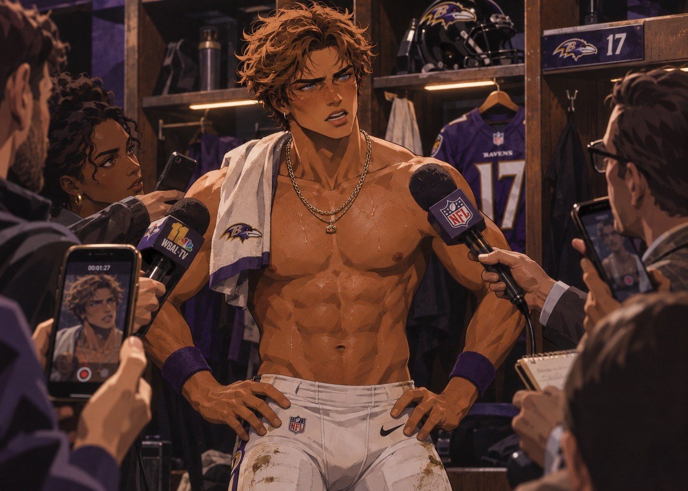
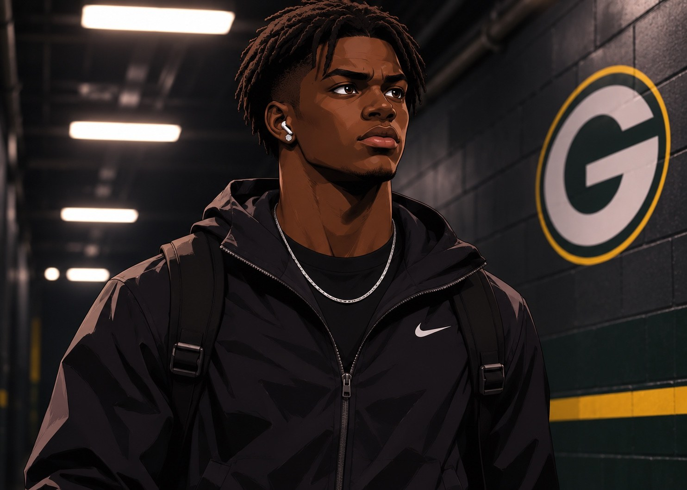
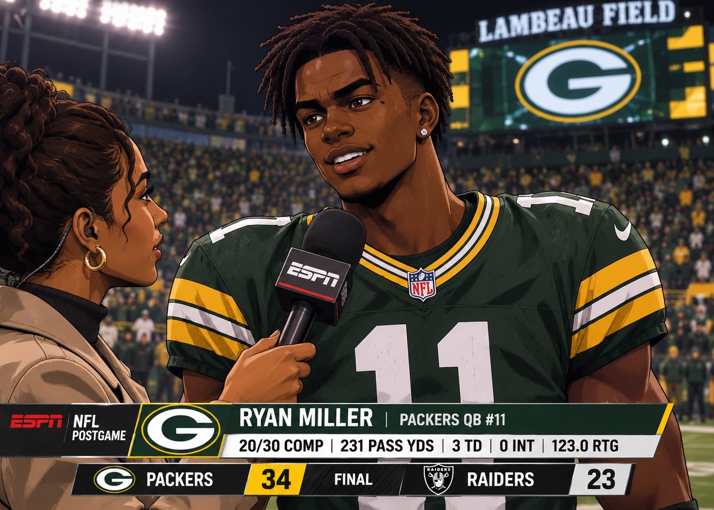
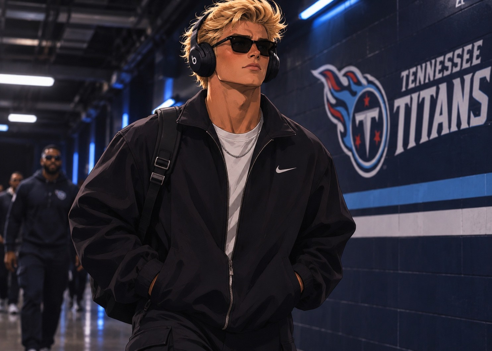
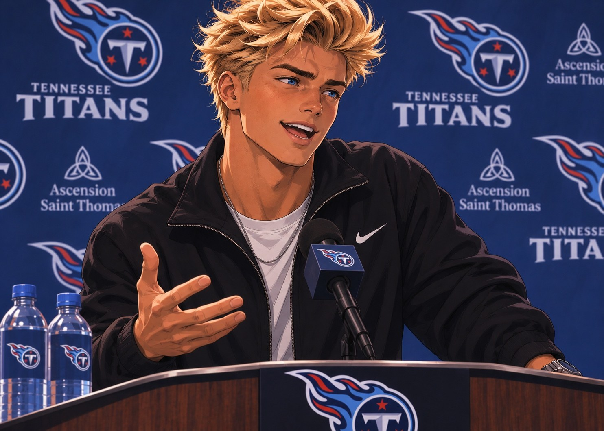

An AFC North avalanche. A quarterback coming into his own. A rookie corner learning just how good the league can be. One football week told as one connected broadcast.
Two unbeaten teams, a division rivalry and a Tennessee defense with something to prove. On the desk, the big questions start with the teams and eventually reach the rookies.
Good morning, everybody. Week Three is here. We have a division game in Pittsburgh, a Raiders team headed into Green Bay, and a Dolphins offense taking on Tennessee. And after two weeks, we already have three very different questions about the people in those games.
No, I want to start with the Ravens as a football team. They are two and zero. They have beaten Cleveland and they went into Kansas City and handled business. You cannot dismiss that. But Pittsburgh does not care how good your first two Sundays looked.
Baltimore has to establish Derrick Henry today. That is a physical AFC North defense. You cannot turn this into thirty five dropbacks, chase chunk plays, and expect a division game to be pretty.
And Caleb Williams has had a fascinating start. He threw five touchdowns in the opener, then he was calmer in Kansas City, one touchdown, zero interceptions. Today I want to see him manage the middle of the field and recognize Pittsburgh rotating coverage after the snap.
I am interested in the Steelers secondary, because Baltimore has two different problems to present. Alec Pierce can take the roof off a defense. Nasir Cruz can win on the underneath stuff, intermediate breaks, and get yards after the catch. Those are different coverages.
Speaking of Nasir, eighteen catches the first week and then just three in Kansas City. Is today a chance for us to get a more realistic picture of what this rookie is?
Exactly. I gave him his flowers for that opening night. But eighteen is not normal. Three is also not necessarily who he is. What I need to know is whether he can be effective when a defensive coordinator decides to make his life miserable.
And you know what? If Pierce gets open five times because they shade help to the rookie, that is winning football too. The Ravens did not draft Nasir Cruz to win a weekly receiving title.
Now to Green Bay. Ryan Miller is two and zero as a starter, and we have gone from worrying about the quarterback to wondering whether he can lead this offense without Jahmyr Gibbs.
I owe him credit for last week. Twenty four of thirty five, three hundred twenty yards, two touchdowns, no picks against the Chargers. That is a dramatic improvement from four completions against Chicago. He stepped into throws and did not panic.
Hold on, Dan. One good start does not make him a franchise quarterback. I am not ready to anoint a third round rookie because he had one excellent afternoon.
Nobody asked you to anoint him. We are saying he responded. Gibbs is unavailable, and the kid did more than survive. The question is whether Las Vegas forces him to do it again and makes him pay for the passes he got away with last Sunday.
And the offensive line has to be honest with him. Ryan Miller is not Kyler Murray as an athlete. You cannot ask this young man to rescue bad protections with his legs. Let the ball come out, use the tight ends, and make the Raiders tackle.
There is also the Titans. They got handled by Houston. Forty four to twenty one, seven giveaways. That is almost impossible to survive.
SEVEN turnovers, Shae. Seven! I do not want to hear about anybody else until Jaxson Dart learns to protect the football.
And that gets overlooked when people talk about the defense. Tennessee did have individual defenders winning. Their rookie corner, Lachlan Knox, made his first interception and competed physically. But when the offense keeps giving the ball away, coverage cannot erase seven extra chances.
Miami presents a different test. Ty Simpson spreads the ball around, and Amon Ra St. Brown can win from a slot alignment, outside, anywhere. You cannot declare a corner a shutdown guy after two games and think he is never going to get beat.
Exactly. The young corners who last in this league learn to lose a rep and play the next snap. If Knox wins five snaps and loses three, he needs to stay composed and keep competing.
Three games. Baltimore trying to stay perfect against a rival. Green Bay trying to prove the quarterback is real. Tennessee trying to stop beating itself. Let us get to the opening lines and make some picks.
Baltimore wins a close one, Green Bay wins if Miller protects the ball, and I like Miami to make Tennessee earn every single yard.
Give me Pittsburgh to make that Baltimore game ugly, Green Bay to keep rolling, and Tennessee to bounce back at home. You get all the receipts on Monday.
Familiar three market layout with both teams, a game total and the moneyline. Every line below is a fictional projection for this Madden season, not an archived sportsbook price.
Odds are fictional pregame market estimates created for this franchise narrative. No real betting lines are being represented.
The scoreboard is the starting point. What happened inside each game is a far more complicated story.
One week Baltimore was the team humiliating Cleveland 44 to 7. Now Pittsburgh has beaten the Ravens 62 to 28. Nasir Cruz scored twice, but his three drops and the final score leave him with far more to answer for than a stat sheet.
Coming off his record setting debut and a quiet three catch day in Kansas City, Cruz becomes a focal point again: twelve receptions, one hundred forty eight yards and two touchdowns. Yet he also puts three catchable passes on the ground. Pittsburgh scores sixty two, Caleb Williams throws four interceptions and Baltimore suffers the same kind of humiliation it handed Cleveland in Week One.

There is no microphone waiting for Cruz as he walks toward the Baltimore locker room. For a few moments he is just another player heading to work, a little more watched now that his name has become part of a weekly league wide conversation.
Pittsburgh arrives in Baltimore with no interest in helping a young offense settle in. Bo Nix throws four touchdown passes without an interception, Omarion Hampton runs for one hundred one yards and two scores, and the Steelers keep finding explosives. Baltimore has more offensive yardage, but gives the ball away four times while Pittsburgh commits none.
Caleb Williams throws for three hundred twenty four yards and four touchdowns, yet his four interceptions become the defining statistic. Officially he finishes with 17 completions on 36 attempts. That is the rhythm: spectacular completions, costly mistakes, and a defense that cannot stop the response.
For Nasir, the highs and lows live in the same game. He records twelve receptions for one hundred forty eight yards and two touchdowns, but he also drops three passes. The available film captures one of those mistakes, a potential gain of more than twenty yards. It also captures his screen touchdown and another precision scoring connection with Caleb. Those two clips are not excuses for the three mistakes. Alec Pierce adds four receptions, ninety two yards and two scores of his own. Baltimore moves the ball, but its execution and turnover margin collapse. A week ago the Ravens beat Cleveland 44 to 7. This time, they are on the receiving end of a 62 to 28 defeat.
PIT 62, BAL 28. PIT Bo Nix 11/23, 249 YDS, 4 TD, 0 INT. BAL Caleb Williams 17/36, 324 YDS, 4 TD, 4 INT. PIT Omarion Hampton 12 carries, 101 YDS, 2 TD. BAL Nasir Cruz 12 REC, 148 YDS, 2 TD, with 3 dropped passes reported for the game; Alec Pierce 4 REC, 92 YDS, 2 TD. Official Madden screenshots govern the recorded totals; the three drops are additional gameplay context supplied for this story.

Twelve catches, one hundred forty eight yards and two touchdowns, but three drops as well. You are standing here looking furious. Is it the score, the mistakes, or both?
Both. Three balls hit my hands that I should have caught. That is on me. Then you look up and Pittsburgh has sixty two on us, in our division. I do not care what my stat line looks like. It is a terrible feeling.
How does it feel getting blown out like this? You were on the winning side of a blowout two weeks ago. Is this the most embarrassing loss you have ever been part of?
It feels awful. You are standing here asking me about my two touchdowns while their locker room is celebrating sixty two points. It is embarrassing. Nobody in our room should feel okay with it, especially against Pittsburgh.
Just two weeks ago, you beat Cleveland forty four to seven. Today Pittsburgh scored sixty two on you. Does it hit differently when you are on the other side of the kind of blowout you handed the Browns?
Yeah, it does. In Cleveland everything was going our way. Today we found out how that feels from the other sideline. We embarrassed them, and Pittsburgh embarrassed us. You do not get to enjoy the first one and pretend the second one means nothing.
Was there a moment you realized it had turned into something more than just a bad afternoon?
When they kept scoring and we kept giving them chances. That is when you have to look at yourself and ask if you are helping solve the problem. I know there were plays where I was not.
It looked as if you were still trying to get open late even with the deficit. Were you pushing to make something happen?
Of course. I did not come out here to be a spectator. Every snap matters. You are down, you still run your route, you still finish. We cannot just say the game is over and stop playing.
You had three dropped passes, not just the one everybody saw on the highlight. One was a downfield opportunity of more than twenty yards. How did those missed catches happen?
The first thing is I am not hiding from the number. Three. All three are mine. On that deep one I had the ball right there and did not finish. The other two, same answer. I do not need somebody making an excuse about contact or timing. I am supposed to catch those.
One of Cruz’s three drops, a downfield opportunity of more than twenty yards. This clip shows one missed catch, not all three.
Do the two touchdowns make those three drops easier to move on from?
No. Why would they? You make a great play and then miss a catch you are paid to make. Those things do not erase each other. I am going to watch every one of those drops again, and I will be mad every time.
The screen touchdown is on the film too. You turned a short opportunity into a score. What did you see developing?
They gave us leverage. I caught the ball, got behind the blocks and found a lane. That is the job. Get it to me with room and I will make people tackle in space.
Cruz creates an explosive score after the catch. He explains the leverage and blocking on the play.
Later, Caleb put another touchdown pass on you. Does that play tell you the connection is growing?
We have been putting the time in. He trusted me on the timing and I trusted the ball was going to be there. That one was clean. It is what we work on.
The second scoring clip, discussed in the interview as a timing and trust play between Caleb and Cruz.
Caleb threw four interceptions. At what point does a receiver have to tell his quarterback that the decisions are hurting the team?
You can ask me about my three drops. Ask me all day. I am not sitting here pointing at Caleb because the scoreboard got ugly. You want accountability? Start with the guy talking to you.
But four interceptions is four interceptions. You have been open a lot. Is it frustrating when the ball goes elsewhere?
You are trying to turn my answer into something it is not. I dropped three. Three. I am telling you that myself. We all have plays to clean up, so stop trying to get me to put it all on one guy.
So you still consider Caleb the right quarterback for this team after today?
I have got the best quarterback in the league. Period. I believe that. I do not care if the people watching at home believe me. That is my guy.
The best quarterback in the league, even after four picks and a loss by thirty four?
Did I stutter? We are not abandoning each other because we had an awful Sunday. He is going to answer for his plays, I am going to answer for mine, and we are going back to work.
Some fans say a team that put forty four on Cleveland had no business giving up sixty two against Pittsburgh. What would you say to people questioning whether those first two wins were misleading?
I would tell them to watch the games. We earned those wins and we earned this loss. Nothing from Cleveland comes back and saves you when Pittsburgh puts sixty two up. We got beaten, badly. That is a fact. But one Sunday does not wipe away everything we are building.
Do you think Pittsburgh was more physical than Baltimore expected?
They were ready. Credit to them. They made tackles, they made plays on the ball, and they punished mistakes. That is what good division teams do. We have got to match it.
Did that fourth quarter change how you think about this season?
It reminded me that the score can get ugly fast. There is nothing guaranteed because of what you did last week. We were two and zero. Now we are two and one. That is what matters.
The calendar still says early season. Ryan Miller is now 3–0 as Green Bay’s starting quarterback, with back to back efficient performances while Jahmyr Gibbs is sidelined.
Gibbs remains unavailable. Kyler Murray is still out. Green Bay is supposed to be patching the offense together. Instead a third round rookie throws three scores without a turnover and the Packers stay undefeated.

After the Chicago opener, the biggest problem was simple: the quarterback appeared overwhelmed. The Chargers game changed that conversation. The Raiders game makes it harder to call that change a one week accident.
Ryan Miller completes twenty of thirty passes for two hundred thirty one yards, three touchdowns and zero interceptions. Terry McLaurin turns three catches into one hundred eleven yards, including a seventy seven yard gain and a score. Hunter Henry adds six receptions for forty five yards and a touchdown. E. Stocker catches the third touchdown pass. Green Bay also gets a rushing score from Jadarian Price, who carries nineteen times for seventy eight yards.
Las Vegas is not harmless. Drake Maye finishes with two hundred sixty seven passing yards and two scores, and Sam LaPorta catches two touchdowns. But two Raiders turnovers, compared with none for Green Bay, tip the game. The Packers hold the ball, take their shot, and walk off 3–0.
LV 23, GB 34. GB Ryan Miller: 20/30, 231 YDS, 3 TD, 0 INT, 123.0 passer rating. LV Drake Maye: 27/34, 267 YDS, 2 TD, 1 INT. GB Terry McLaurin: 3 REC, 111 YDS, 1 TD. GB Jadarian Price: 19 rushes, 78 YDS, 1 TD. Gibbs did not play.

Ryan, three and zero. You have just beaten Las Vegas, thirty four to twenty three. Twenty of thirty, two hundred thirty one yards, three touchdown passes, no interceptions. How are you feeling right now?
Good. I am proud of the way we played. Everybody has been talking about who we do not have, but there is a full offense in that locker room. We prepared for this game and we executed.
Terry McLaurin has a seventy seven yard gain and finishes with a hundred eleven. Was that shot part of the plan?
We had a look we liked. Terry ran it exactly the way we drew it. I had to put the ball where he could make a play, and he did the rest. You see a guy like that and you do not overthink it.
Jahmyr Gibbs is still out and yet this offense has scored twenty four and thirty four in two straight wins. What has changed since Chicago?
I made the game too fast in my head against Chicago. You cannot play quarterback like that. I settled down. I trust the protections. I trust our guys. The ball comes out when it is supposed to.
Stephen A. Smith said last week that one good game does not make you a franchise quarterback. Do you hear that?
I do. Stephen A., I heard you. And Dan Orlovsky, I heard what you said about my first game too. You were right that I did not play well. I am not going to pretend that I did.
So you have an answer for them today?
The answer is the film. I am not going to argue that three games makes me anything. But I am also not going to let someone tell me that game one is the only version of me. Keep watching. That is all I ask.
One last thing. Three straight wins. Has the team stopped thinking about when Kyler Murray comes back?
That is not my job to decide. Kyler has been great to me. I have a responsibility to start whenever the coaches ask me to. Today I did it well, and now we go try to do it again.
A hard fought win and a difficult receiver matchup can both be true. For Lachlan Knox, the next step is learning from a veteran who wins more of their battle.
After seven team turnovers last week, Tennessee gets a cleaner day from Jaxson Dart and a thirty seven point win over Miami. Amon Ra St. Brown goes for a hundred eleven yards. Knox gets beat on some snaps and wins others. The story is not a shutdown; it is a rookie learning.

The Dolphins are a serious test of Tennessee’s ability to recover from a disastrous outing. The Titans and Dolphins trade momentum all afternoon, but Jaxson Dart completes twenty one of thirty nine passes for one hundred ninety three yards, two touchdowns and no interceptions. Tavarius Seawright runs for eighty one yards and a touchdown. James Conner adds two rushing scores.
Across the field is one of the most technically reliable receivers in football. Amon Ra St. Brown finishes with eight catches, one hundred eleven yards and a touchdown. Knox competes against him on a series of snaps. Some he wins with leverage and physical coverage, some St. Brown wins with veteran timing. The receiver wins the overall matchup. It would be misleading to assign all eight catches or the touchdown to Knox without complete individual coverage charting.
The rookie’s official line is five tackles, three solo and two assisted, with no recorded interception or pass deflection. That line misses the technical chess match, but it also prevents a convenient myth: Tennessee allowed thirty one, and there is plenty to repair.
MIA 31, TEN 37. TEN Jaxson Dart: 21/39, 193 YDS, 2 TD, 0 INT. MIA Ty Simpson: 20/39, 274 YDS, 3 TD, 2 INT. MIA Amon Ra St. Brown: 8 REC, 111 YDS, 1 TD. TEN Lachlan Knox: 5 TKL (3 SOLO, 2 AST), 0 INT, 0 recorded PD. Individual targets against Knox were not supplied.

Lachlan, thirty seven to thirty one. You needed that one after Houston. How much of a relief is it?
Pretty big relief, mate. You do not enjoy watching a result like last week. You get to Monday, have to watch every mistake again, then you get a chance to put something better on the field. We won. That is the important bit.
You had five tackles tonight, three solo. No interception this time. How would you evaluate the game?
Some good football, some stuff I need to correct. We gave up thirty one. I am not here to pretend we pitched a shutout. But we kept competing, and when we needed the defense to settle down, we did enough.
Amon Ra St. Brown had eight catches for a hundred eleven yards and a touchdown. You matched up with him at times. Did he get the better of you?
On balance? Yeah, he had the better day. He is a brilliant receiver. Really smart with his body, really smart with his timing. Some reps I had him. Some reps I did not. That is professional football.
There were a couple snaps where you were in good position and forced him to work away from the throw. Do those matter when you look at his final stat line?
They do to us. You have to judge the assignment snap by snap. The box score tells you what he did for the whole game, not who was responsible on each target. I will take the good technique, fix the bad, and move on.
But people were calling you Fort Knox two weeks ago. Do you think St. Brown exposed that nickname?
Well, if the nickname means no good receiver is ever allowed to catch a football, you lot might need to change it. I am trying to win my reps, not make the internet happy.
Were you surprised by how physical he was?
Not a bit. You watch him. He is strong through contact and he does not panic when a defender gets hands on him. You have to stay patient or he will make you look silly.
The offense put up thirty seven after throwing seven picks against Houston. How much difference does that make for the defensive backs?
Massive. We all know what happened last week. Jaxson did not need me telling him that was a bad day. He came back, protected the football and helped us win. That is what good teammates do.
Miami still scored thirty one. Are you worried that Tennessee cannot win if opponents keep scoring this much?
We have to tighten it up. Absolutely. Winning does not mean you ignore the film. Good teams can enjoy the result and still be annoyed by the things they let happen.
Would you want another shot at St. Brown?
Of course. Why would I not? Best way to improve is to line up against the best. He got this round. That does not mean I am done competing.
Monday is not three separate recaps. It is one conversation about quarterback decisions, rookie development, winning football and the difference between great statistics and great results.
Monday morning. The Baltimore Ravens just surrendered sixty two to the Steelers. The Green Bay Packers are three and zero without their injured starting quarterback and without Jahmyr Gibbs. And Tennessee got a thirty seven to thirty one win over Miami. There is plenty to get to.
SIXTY TWO. In a division game! I do not care if your rookie receiver has two hundred yards. Baltimore cannot give up that many points and act like everything is okay.
Can we talk about the irony? Week One, Baltimore humiliates Cleveland forty four to seven. Two weeks later, Pittsburgh hangs sixty two on the Ravens. That is an incredible reversal.
Caleb Williams threw four interceptions. Four. Baltimore had a very real chance to compete in that game, but you cannot give away four possessions and then ask a defense that is already struggling to save you.
He threw four touchdowns too, but that is the trap. The highlights were great. The decisions in between were not. That is not sustainable against Pittsburgh. That defense changes pictures and makes you pay if you get impatient.
Nasir Cruz gives you twelve catches, a hundred forty eight yards and two touchdowns. That is serious production. But he also has three drops. Not one. Three. We cannot ignore those because the highlights look good, and to his credit he did not ignore them either.
I liked that he admitted to the three drops. But then the reporter asks about Caleb and he declares that Caleb is the best quarterback in the NFL. Come ON. You are a young man standing by your guy. Fine. But you cannot tell me you actually believe that after four interceptions.
I believe he believes it, Stephen A. Loyalty does not have to be a lie. Whether we agree is a completely different question. The important part is he refused to put his quarterback on blast in the locker room.
That matters. You saw how tense he was. He was not celebrating his two touchdowns, he was thinking about the loss. That is what you want from a first round receiver. But listen: this team has got to run the football and protect the ball.
Now let us talk about a quarterback who did protect it. Ryan Miller. Green Bay wins thirty four to twenty three. Twenty of thirty, three touchdowns, no picks, a hundred twenty three passer rating.
That is two strong starts in a row. His processing is better. You see it in the timing with Hunter Henry. You see it on the shot to Terry McLaurin. He is still a rookie, but the game has slowed down for him.
Fine. I will say this. He is playing a whole lot better than he did against Chicago. I still want to see what happens when he has to chase the game from behind, but I cannot pretend he has not earned these wins.
And he called you out by name after the game.
I heard him! I heard him! And you know what? That is fine. I want a quarterback who listens to the criticism and goes out there and answers it with play, not social media.
And stop forgetting the rest of the Packers. Jadarian Price gives them seventy eight yards, Terry McLaurin makes the explosive, Hunter Henry is doing the dirty work. Miller is making the offense function. That is the story. It is a team.
The Titans are two and one after beating the Dolphins. Jaxson Dart cleans up the turnovers and Tennessee gets to thirty seven. But Miami still throws for two hundred seventy four and St. Brown goes for a hundred eleven.
That St. Brown matchup was a lesson for Lachlan Knox. Watch some of those snaps. The rookie is in position, he is competing and he does not lose his head. But an elite veteran still wins with subtle timing, shoulder angles and leverage.
So are we retiring Fort Knox after three weeks?
No. We are going to let the kid develop! A corner is allowed to get beat by Amon Ra St. Brown and still be a good prospect. What matters is whether the next rep looks better.
Also we should not attribute every Miami catch to Knox. These defenses use zone, switches, motion, all of it. You would need the full matchup chart. The verified line says five tackles, and the tape shows contested reps. That is enough to tell an honest story.
The bigger Tennessee story is that Jaxson Dart threw zero picks after throwing seven. If the offense stops handing the other team the ball, the defense can actually play football instead of protecting a catastrophe.
Week Three leaves us with a division disaster in Baltimore, a real quarterback conversation in Green Bay and a Tennessee team that survived a shootout. The season is young. The tape is accumulating. And that is exactly why Monday is never the last word.
Nasir Cruz has twelve catches and two touchdowns but also three drops, and Baltimore just suffered the kind of blowout it inflicted on Cleveland. Ryan Miller has answered his Week One critics with two strong games and three consecutive wins. Lachlan Knox is learning how to compete against one of the best route runners in the sport without pretending he won every snap.
Baltimore 2–1. Green Bay 3–0. Tennessee 2–1. The early standings tell part of the story. The next Sunday gets the final word.
Three rookies. Eighteen regular season weeks. Three weeks recorded. Swipe the stat table to the right to see every week and the running total.
Week 3 complete · 3 rookies · 3 teams
| PLAYER / STAT | W1 | W2 | W3 | W4 | W5 | W6 | W7 | W8 | W9 | W10 | W11 | W12 | W13 | W14 | W15 | W16 | W17 | W18 | SEASON TOTAL |
|---|---|---|---|---|---|---|---|---|---|---|---|---|---|---|---|---|---|---|---|
Nasir “Nas” CruzBAL · WR #17REC / YDS / TD |
18 / 135 / 45 RUSH · 44 YDS · 1 TD | 3 / 30 / 0RUSH NOT REPORTED | 12 / 148 / 289 RAC · LONG 57 | · | · | · | · | · | · | · | · | · | · | · | · | · | · | · | 33 REC / 313 YDS / 6 TD1 RUSH TD CONFIRMED · 7 TOTAL TD · 3 WEEKS |
Ryan MillerGB · QB #11PASS YDS / CMP / ATT / TD / INT |
80 YDS4/13 CMP/ATT · 0/1 TD/INT | 320 YDS24/35 CMP/ATT · 2/0 TD/INT | 231 YDS20/30 CMP/ATT · 3/0 TD/INT | · | · | · | · | · | · | · | · | · | · | · | · | · | · | · | 631 PASS YDS · 48/78 CMP/ATT5 PASS TD · 1 INT · 61.5% CMP · 3–0 |
Lachlan “Lockie” KnoxTEN · CB #1TKL / SOLO / AST · PD / INT |
3 / 2 / 10 PD · 0 INT | 5 / 1 / 40 PD · 1 INT | 5 / 3 / 20 PD · 0 INT | · | · | · | · | · | · | · | · | · | · | · | · | · | · | · | 13 TKL / 6 SOLO / 7 AST0 RECORDED PD · 1 INT · 3 WEEKS |
Scroll sideways within the table to compare every week. Player names remain visible on the left. The season total is the last column. · means results have not been recorded yet, not that a player did not play. DNP and BYE will appear only when confirmed.